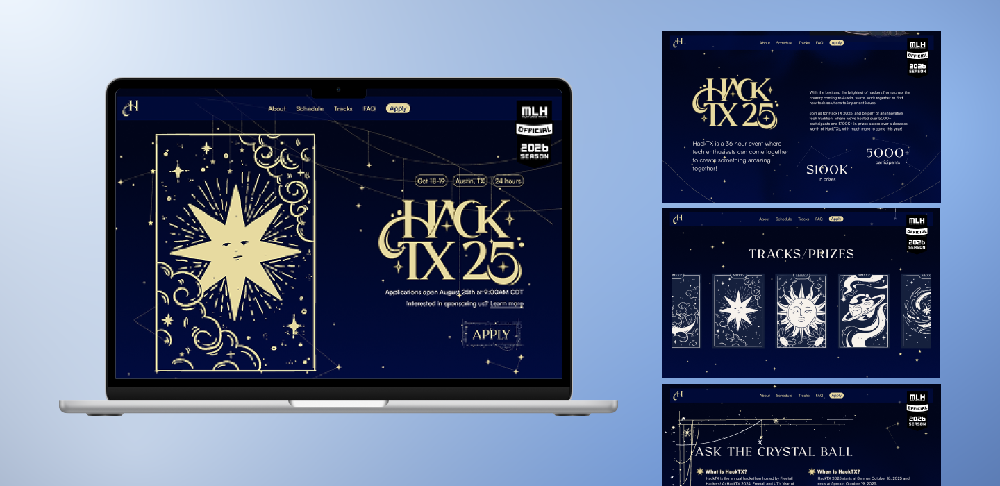
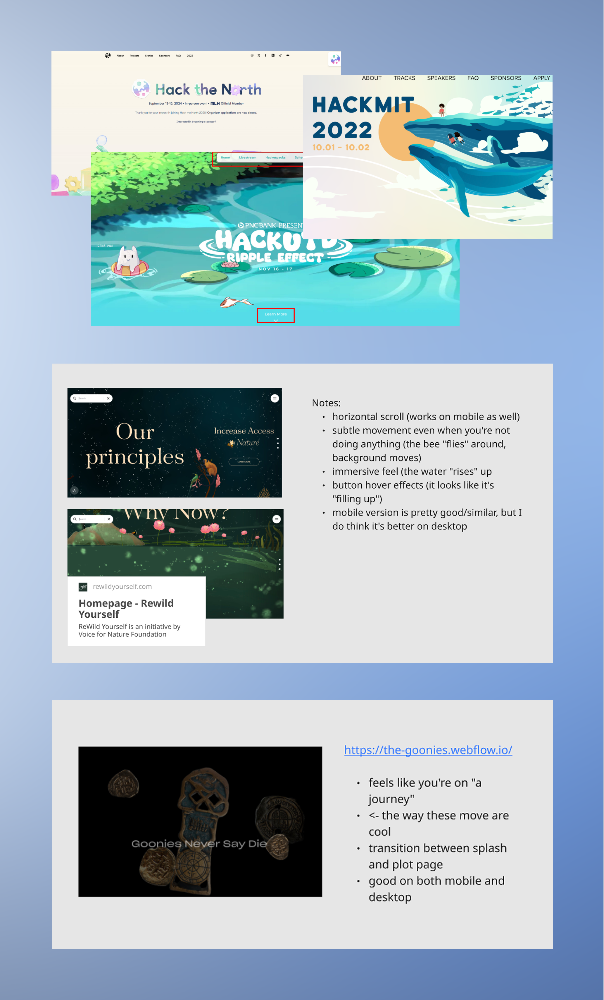
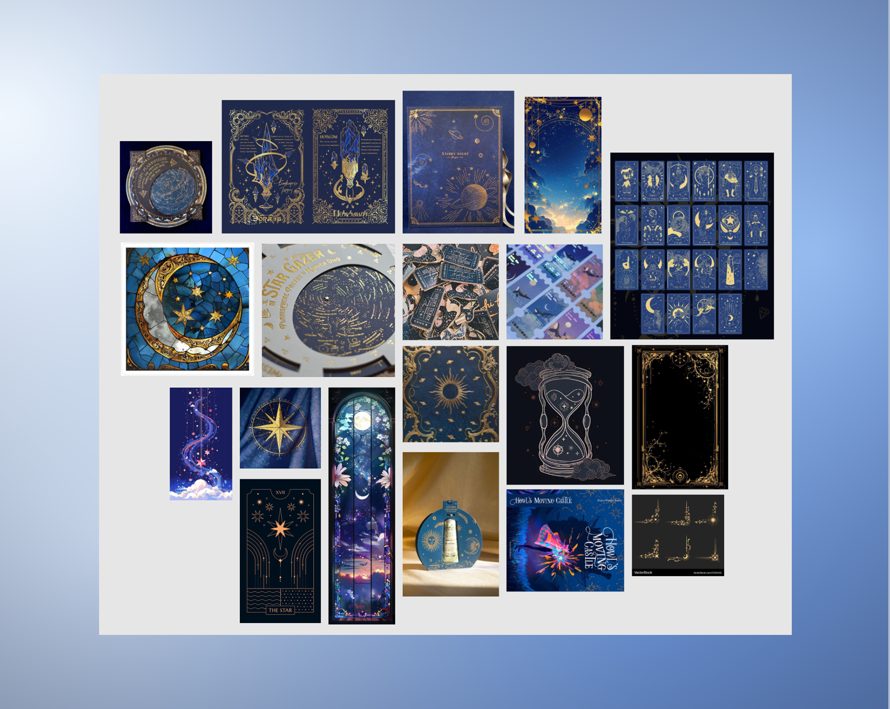
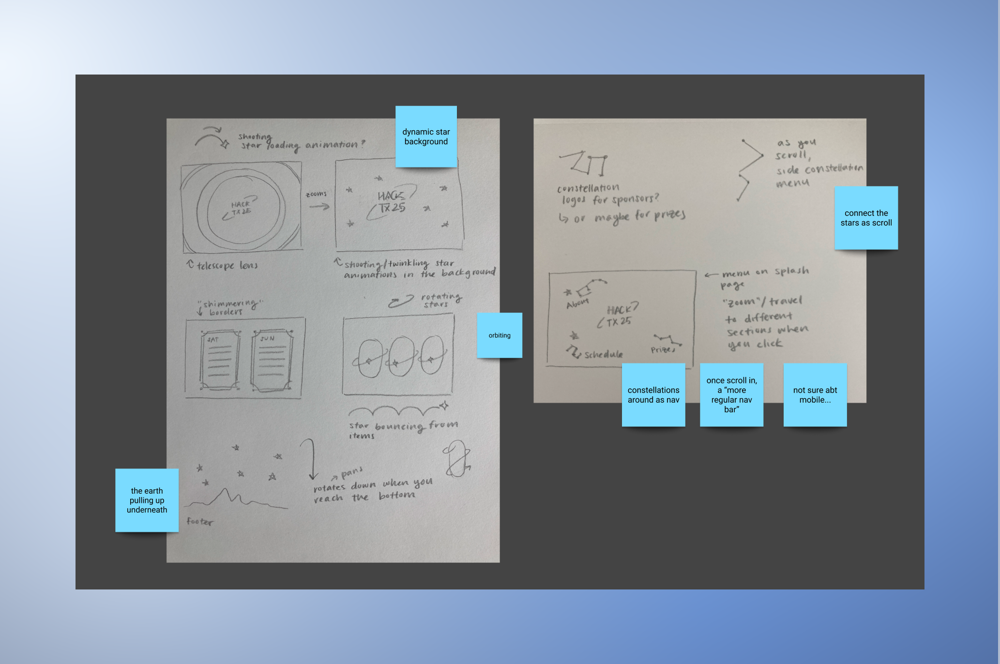
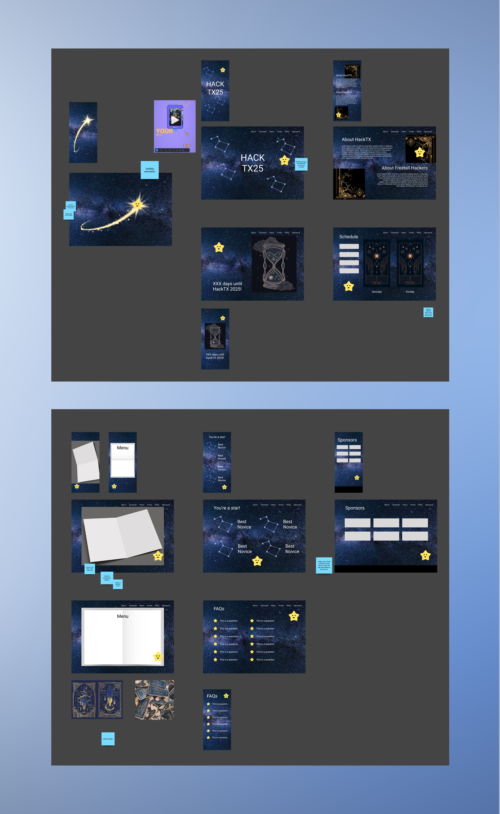
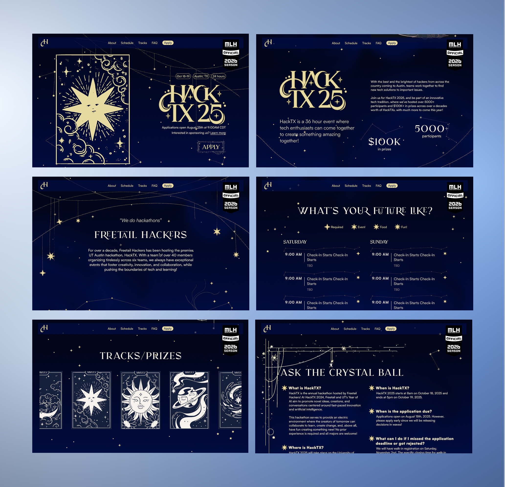

Setting the Mood for UT Austin's Largest Hackathon

overview
HackTX is an annual hackathon hosted at UT Austin.
I worked on the creative team designing the event website. Our goal was to create a site that would both attract and excite participants, so we chose a celestial theme to evoke a sense of wonder and creativity. I focused on crafting an immersive experience through engaging visuals and dynamic interactions, resulting in a website that captured attention and enhanced the event’s identity.
inspiration
Our inspiration came from a variety of sources, including other hackathon websites and immersive web experiences, keeping in mind both desktop and mobile concerns.

We also took a lot of visual inspiration from graphics we found online. Take a look at our moodboard!

ideation
We then translated our ideas into sketches and low-fidelity prototypes, experimenting with elements like shooting stars, ornate gold borders, constellations, and dynamic backgrounds. These early designs helped us explore the celestial theme and refine the visual and interactive direction before moving into higher-fidelity development.
This decision helped me move from a vague concept to a clear design goal: learning through a medium that feels lighthearted and surprising. My persona reinforced this choice by highlighting users’ need for understanding, participation, and leisure, all of which could be met through a comic. Creating an early hypothesis and sketch also helped me visualize what I wanted to design and identify the key aspects I needed to include.


the final site
Afterward, we developed a high-fidelity prototype of the site, creating custom graphics to bring our celestial theme to life. Once the design was finalized, we handed it off to the development team, who brought the vision to reality!

final thoughts
This was such a fun project that allowed me to be more creative than usual. I enjoyed the opportunity to develop a cohesive brand for an entire hackathon and translate that vision across the website, graphics, merch, and the event as a whole. It was rewarding to experiment freely and play with ideas in a way that felt less constrained than typical client or class projects, making the process both fun and creatively fulfilling.